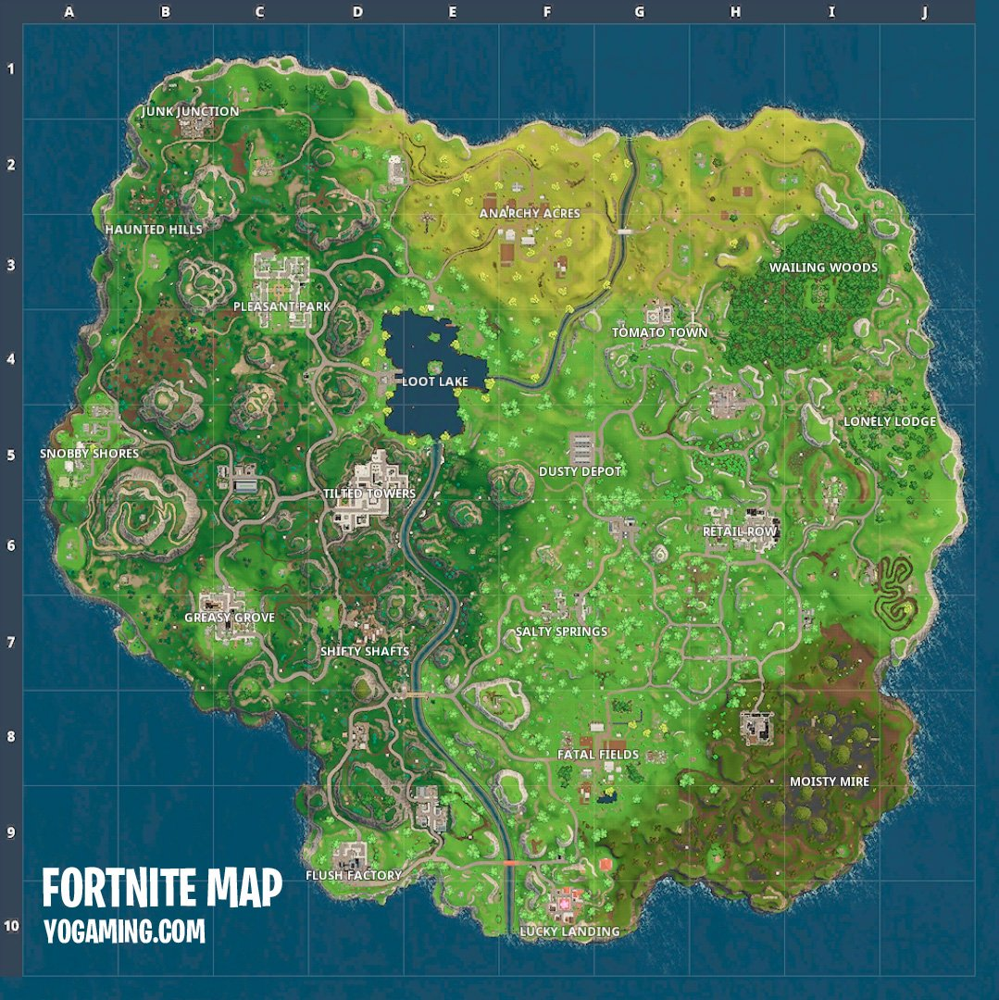
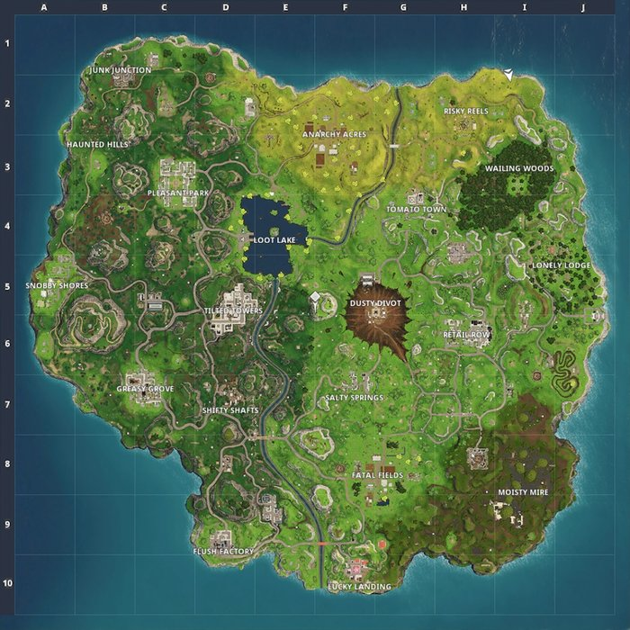
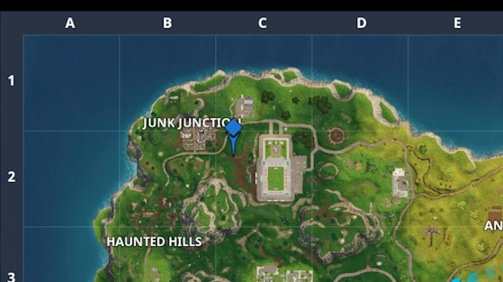
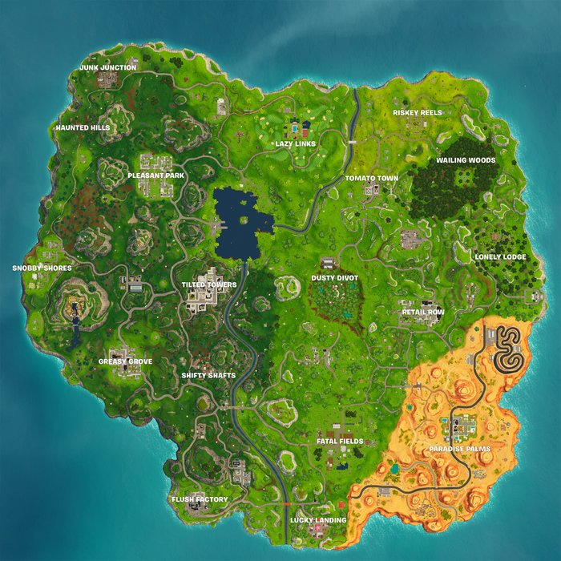
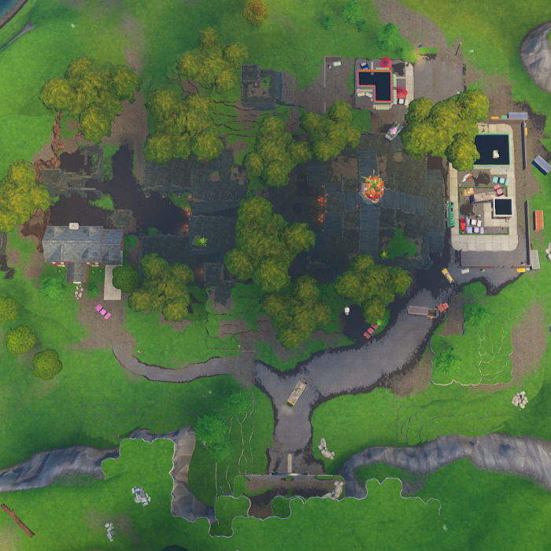
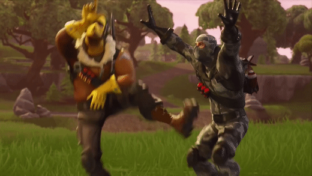

This was the first Fortnite Battle Royale map ever during season 1.

This was the second Fortnite Battle Royale map ever. This map update added "Junk Junction", "Haunted Hills", "Tilted Towers", "Snobby Shores", and "Shifty Shafts!"
This was a Chinese New Year Update that added in only "Lucky Landing" to the map .
This Fortnite Battle Royale map that added in "Risky Reels" and took out "Dusty Depot" because a meteor in the sky at the end of season 3, hit "Dusty Depot" turning it into "Dusty Divot."
This was a limited time map update adding in a soccer stadium because of the 2018 soccer craze, this stadium was remove at the end of season 4.
This map was added in at season 5 adding "Paradise Palms" and "Lazy Links" removing "Anarchy Acres".
This map was added in at season 5 adding "Tomato Temple" removing "Tomato Town".

This map was added in at season 6 adding a big hole in"Loot Lake" removing a big chunk of Loot Lake.
